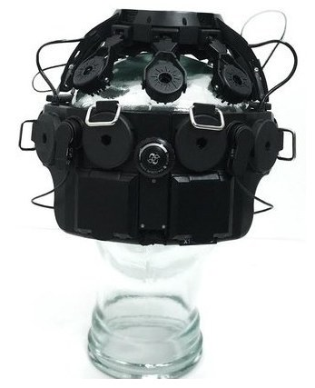

VR Development with DSI devices#
Build immersive virtual reality experiences powered by real-time EEG data. Wearable Sensing devices are designed to work alongside consumer VR headsets, either with the compact VR-300 or with other DSI devices using the VR Adapter.

The VR-300 worn with a consumer VR headset for EEG in VR development#
Device Options for VR#
The VR-300 is the recommended device for VR development. Its low-profile form factor sits comfortably under most consumer headsets (Meta Quest, HTC Vive, Valve Index) without requiring any additional hardware.
Other DSI devices (DSI-24, DSI-7, DSI-Flex) can also be used with VR headsets using the Wearable Sensing VR Adapter. The adapter provides mounting clips and a head strap that secure the headset and EEG cap together.
{kind=link}

DSI-24 with the VR Adapter clips for use with a VR headset#
The VR Adapter is available as an accessory for most DSI devices. Contact Wearable Sensing for availability and compatibility with your device.
Why EEG in VR?#
Combining EEG with VR enables brain-computer interface applications in immersive environments — from neurofeedback that adapts the virtual world in real time, to active BCI control using motor imagery or P300 signals.
Getting Started#
1. Hardware Setup#
Seat the EEG cap properly before putting on the VR headset.
Verify signal quality using the DSI software before launching your VR application.
In electrically noisy environments, use a wired USB connection for more reliable data quality.
2. Data Pipeline#
See the Best Practices & Tooling page for the full architecture diagram, tooling, and system requirements.
The pipeline:
Stream EEG data from the device using LSL.
A Python backend reads the LSL stream, processes the data, and sends predictions to the game engine.
Unity (or your engine of choice) receives predictions and uses them to drive the VR experience.
See the Unity Integration guide for implementation details.
3. LSL Markers in VR#
LSL markers are the standard way to synchronize stimulus events between the game engine and the EEG backend. In a VR application, Unity sends an LSL marker at each stimulus onset. The Python backend reads both the EEG LSL stream and the marker stream to extract time-locked epochs for classification.
See the Unity Integration guide for code examples showing how to send LSL markers from a Unity VR scene.
4. VR Platform SDK Setup#
The VR headset must be connected to the game engine through a platform-specific SDK before EEG data can be integrated. This is separate from the EEG streaming setup.
Unity XR Plugin Framework#
Headset |
Plugin / Package |
|---|---|
Meta Quest 2/3/Pro |
Meta XR SDK via Unity Package Manager |
HTC Vive / Valve Index / SteamVR |
OpenXR Plugin ( |
Varjo / Pico / others |
Open Edit > Project Settings > XR Plug-in Management.
Install the relevant provider plugin for your target headset.
Enable the provider under the PC or Android tab (Quest uses Android; PC headsets use the PC tab).
Optionally install the XR Interaction Toolkit (
com.unity.xr.interaction.toolkit) for hand and controller input.
Unreal Engine OpenXR#
Open Edit > Plugins, search for OpenXR, and enable it.
For Meta Quest, also enable the Meta XR Plugin.
Set the project to target the correct platform (Desktop VR or Android for Quest).
Godot OpenXR#
Download the GodotOpenXR plugin from the Godot Asset Library or GitHub.
Enable it in Project > Project Settings > Plugins.
Add an
XROrigin3Dnode and attach anXRCamera3Dfor the player’s viewpoint.
The VR SDK and EEG pipeline run independently in parallel. The SDK controls the headset; the EEG pipeline drives in-game events from brain signals.
5. VR-Specific Considerations#
Frame rate: VR requires a consistent 72-120 Hz frame rate. Offload all EEG processing to the backend so the game engine can focus on rendering.
Latency: Use serial port communication for the lowest latency prediction delivery. See Learning: Triggers & Event Alignment for timing validation.
Comfort: Plan for shorter sessions when combining EEG and VR hardware. Allow users to adjust both devices for a comfortable fit.
Motion artifacts: Head movement in VR introduces EEG artifacts. Include artifact rejection in your processing pipeline.